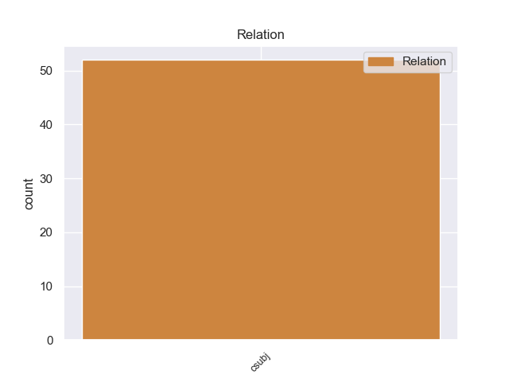
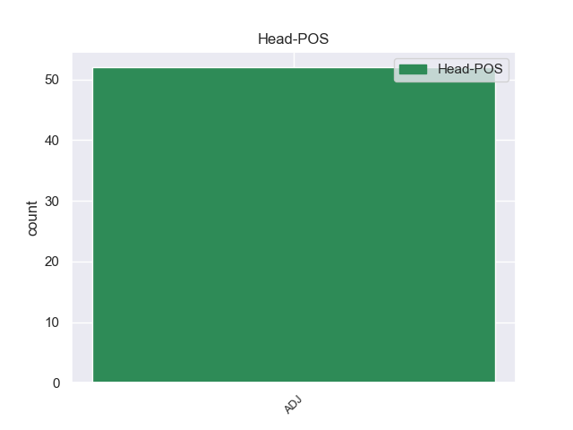
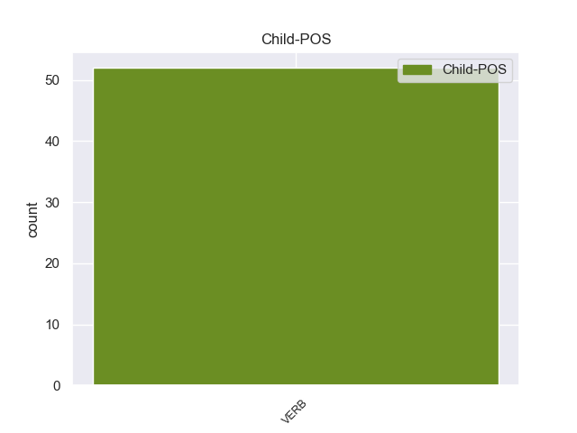

Distribution of features within this leaf



Morphosyntax Rules sorted by frequency.
- When the dependent token is the clausal subject(csubj) of the head token, and the head token is ADJ the Mood needs to be Sub.
1 En _ _ _ _ 0 _ _ _
2 las _ _ _ _ 0 _ _ _
3 plantas _ _ _ _ 0 _ _ _
4 , _ _ _ _ 0 _ _ _
5 las _ _ _ _ 0 _ _ _
6 flores _ _ _ _ 0 _ _ _
7 de _ _ _ _ 0 _ _ _
8 el _ _ _ _ 0 _ _ _
9 Cretácico _ _ _ _ 0 _ _ _
10 estaban _ _ _ _ 0 _ _ _
11 " _ _ _ _ 0 _ _ _
12 limitada _ _ _ _ 0 _ _ _
13 geográficamente _ _ _ _ 0 _ _ _
14 por _ _ _ _ 0 _ _ _
15 el _ _ _ _ 0 _ _ _
16 paisaje _ _ _ _ 0 _ _ _
17 " _ _ _ _ 0 _ _ _
18 , _ _ _ _ 0 _ _ _
19 por _ _ _ _ 0 _ _ _
20 lo _ _ _ _ 0 _ _ _
21 que _ _ _ _ 0 _ _ _
22 es _ _ _ _ 0 _ _ _
23 probable probable ADJ _ Number=Sing 0 _ _ _
24 que _ _ _ _ 0 _ _ _
25 este _ _ _ _ 0 _ _ _
26 dinosaurio _ _ _ _ 0 _ _ _
27 alimentara alimentar VERB _ Mood=Sub|Number=Sing|Person=3|Tense=Imp|VerbForm=Fin 23 csubj _ _
28 de _ _ _ _ 0 _ _ _
29 las _ _ _ _ 0 _ _ _
30 plantas _ _ _ _ 0 _ _ _
31 predominantes _ _ _ _ 0 _ _ _
32 de _ _ _ _ 0 _ _ _
33 la _ _ _ _ 0 _ _ _
34 época _ _ _ _ 0 _ _ _
35 : _ _ _ _ 0 _ _ _
36 helechos _ _ _ _ 0 _ _ _
37 , _ _ _ _ 0 _ _ _
38 cícadas _ _ _ _ 0 _ _ _
39 y _ _ _ _ 0 _ _ _
40 coníferas _ _ _ _ 0 _ _ _
41 . _ _ _ _ 0 _ _ _
non-conforming Examples:
1 Cierto cierto ADJ _ Gender=Masc|Number=Sing 0 _ _ _
2 es _ _ _ _ 0 _ _ _
3 también _ _ _ _ 0 _ _ _
4 que _ _ _ _ 0 _ _ _
5 cuando _ _ _ _ 0 _ _ _
6 has _ _ _ _ 0 _ _ _
7 comido _ _ _ _ 0 _ _ _
8 tres _ _ _ _ 0 _ _ _
9 o _ _ _ _ 0 _ _ _
10 cuatro _ _ _ _ 0 _ _ _
11 veces _ _ _ _ 0 _ _ _
12 en _ _ _ _ 0 _ _ _
13 el _ _ _ _ 0 _ _ _
14 Indret _ _ _ _ 0 _ _ _
15 casi _ _ _ _ 0 _ _ _
16 todo _ _ _ _ 0 _ _ _
17 te _ _ _ _ 0 _ _ _
18 sabe saber VERB _ Mood=Ind|Number=Sing|Person=3|Tense=Pres|VerbForm=Fin 1 csubj _ _
19 igual _ _ _ _ 0 _ _ _
20 . _ _ _ _ 0 _ _ _
1 Yo _ _ _ _ 0 _ _ _
2 sólo _ _ _ _ 0 _ _ _
3 soy _ _ _ _ 0 _ _ _
4 la _ _ _ _ 0 _ _ _
5 cabeza _ _ _ _ 0 _ _ _
6 visible _ _ _ _ 0 _ _ _
7 de _ _ _ _ 0 _ _ _
8 el _ _ _ _ 0 _ _ _
9 proyecto _ _ _ _ 0 _ _ _
10 , _ _ _ _ 0 _ _ _
11 trabaja _ _ _ _ 0 _ _ _
12 mucha _ _ _ _ 0 _ _ _
13 gente _ _ _ _ 0 _ _ _
14 , _ _ _ _ 0 _ _ _
15 pero _ _ _ _ 0 _ _ _
16 sí _ _ _ _ 0 _ _ _
17 es _ _ _ _ 0 _ _ _
18 cierto cierto ADJ _ Gender=Masc|Number=Sing 0 _ _ _
19 que _ _ _ _ 0 _ _ _
20 aquí _ _ _ _ 0 _ _ _
21 estamos estar VERB _ Mood=Ind|Number=Plur|Person=1|Tense=Pres|VerbForm=Fin 18 csubj _ _
22 tras _ _ _ _ 0 _ _ _
23 siete _ _ _ _ 0 _ _ _
24 años _ _ _ _ 0 _ _ _
25 . _ _ _ _ 0 _ _ _
1 En _ _ _ _ 0 _ _ _
2 general _ _ _ _ 0 _ _ _
3 es _ _ _ _ 0 _ _ _
4 más _ _ _ _ 0 _ _ _
5 lenta lento ADJ _ Gender=Fem|Number=Sing 0 _ _ _
6 que _ _ _ _ 0 _ _ _
7 los _ _ _ _ 0 _ _ _
8 demás _ _ _ _ 0 _ _ _
9 sencillos _ _ _ _ 0 _ _ _
10 de _ _ _ _ 0 _ _ _
11 Under _ _ _ _ 0 _ _ _
12 My _ _ _ _ 0 _ _ _
13 Skin _ _ _ _ 0 _ _ _
14 , _ _ _ _ 0 _ _ _
15 por _ _ _ _ 0 _ _ _
16 lo _ _ _ _ 0 _ _ _
17 que _ _ _ _ 0 _ _ _
18 se _ _ _ _ 0 _ _ _
19 le _ _ _ _ 0 _ _ _
20 considera considerar VERB _ Mood=Ind|Number=Sing|Person=3|Tense=Pres|VerbForm=Fin 5 csubj _ _
21 una _ _ _ _ 0 _ _ _
22 « _ _ _ _ 0 _ _ _
23 balada _ _ _ _ 0 _ _ _
24 rock _ _ _ _ 0 _ _ _
25 » _ _ _ _ 0 _ _ _
26 . _ _ _ _ 0 _ _ _
1 Mark _ _ _ _ 0 _ _ _
2 agarra _ _ _ _ 0 _ _ _
3 un _ _ _ _ 0 _ _ _
4 arma _ _ _ _ 0 _ _ _
5 de _ _ _ _ 0 _ _ _
6 su _ _ _ _ 0 _ _ _
7 bota _ _ _ _ 0 _ _ _
8 y _ _ _ _ 0 _ _ _
9 uno _ _ _ _ 0 _ _ _
10 de _ _ _ _ 0 _ _ _
11 los _ _ _ _ 0 _ _ _
12 agentes _ _ _ _ 0 _ _ _
13 sufre _ _ _ _ 0 _ _ _
14 un _ _ _ _ 0 _ _ _
15 disparo _ _ _ _ 0 _ _ _
16 , _ _ _ _ 0 _ _ _
17 el _ _ _ _ 0 _ _ _
18 cual _ _ _ _ 0 _ _ _
19 resulta _ _ _ _ 0 _ _ _
20 ser _ _ _ _ 0 _ _ _
21 fatal _ _ _ _ 0 _ _ _
22 , _ _ _ _ 0 _ _ _
23 aunque _ _ _ _ 0 _ _ _
24 no _ _ _ _ 0 _ _ _
25 queda _ _ _ _ 0 _ _ _
26 claro claro ADJ _ Gender=Masc|Number=Sing 0 _ _ _
27 quién _ _ _ _ 0 _ _ _
28 efectuó efectuar VERB _ Mood=Ind|Number=Sing|Person=3|Tense=Past|VerbForm=Fin 26 csubj _ _
29 el _ _ _ _ 0 _ _ _
30 mismo _ _ _ _ 0 _ _ _
31 . _ _ _ _ 0 _ _ _
1 " _ _ _ _ 0 _ _ _
2 Está _ _ _ _ 0 _ _ _
3 claro claro ADJ _ Gender=Masc|Number=Sing 0 _ _ _
4 que _ _ _ _ 0 _ _ _
5 después _ _ _ _ 0 _ _ _
6 de _ _ _ _ 0 _ _ _
7 un _ _ _ _ 0 _ _ _
8 partido _ _ _ _ 0 _ _ _
9 como _ _ _ _ 0 _ _ _
10 el _ _ _ _ 0 _ _ _
11 de _ _ _ _ 0 _ _ _
12 el _ _ _ _ 0 _ _ _
13 martes _ _ _ _ 0 _ _ _
14 te _ _ _ _ 0 _ _ _
15 vienen venir VERB _ Mood=Ind|Number=Plur|Person=3|Tense=Pres|VerbForm=Fin 3 csubj _ _
16 cosas _ _ _ _ 0 _ _ _
17 a _ _ _ _ 0 _ _ _
18 la _ _ _ _ 0 _ _ _
19 cabeza _ _ _ _ 0 _ _ _
20 . _ _ _ _ 0 _ _ _